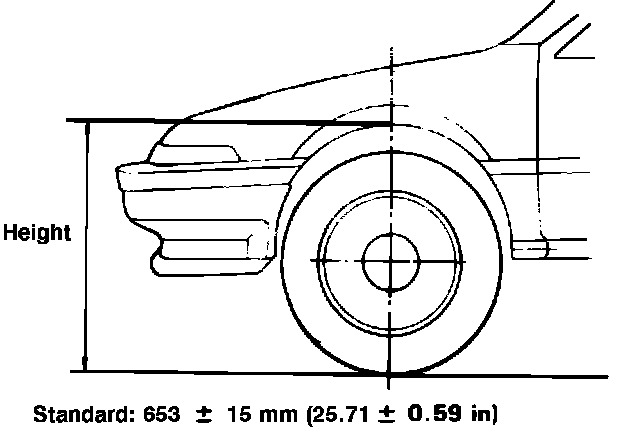

Torsion Bar: Service and Repair
Fig. 8 Exploded view of front suspension components. Integra:

Removal
1. Raise and support front of vehicle.
2. Remove height adjusting nut, then the torque tube holder and circlip, Fig. 8.
3. Remove torsion bar cap, then tap torsion bar forward out of torque tube and remove torsion bar clip.
4. Tap torsion bar backward out of torsion tube, then remove torque tube.
Installation
1. Install new seal on torque tube, then apply suitable grease to seal and torque tube sliding surface.
2. Install torque tube on rear beam.
3. Apply suitable grease to splines on both ends of torsion bar, then slide torsion bar into torque tube from the rear.
4. Align punch mark or projection on torque tube splines with paint mark or cutout in torsion bar bar splines, then insert torsion bar approximately .394 inch.
5. Align cutout in torsion bar splines with projection in lower arm splines, then slide torsion bar in until retaining clip can be installed.
6. Install torsion bar retaining clip and cap.
7. Install circlip on back of torsion bar. Slide torsion bar forward to eliminate clearance between circlip and torque tube.
8. Apply suitable grease to cap bushing, then install the bushing and torque tube holder.
9. Apply suitable grease to height adjusting nut and torque tube sliding surface, then install adjusting nut and tighten temporarily.
Fig. 9 Torsion bar spring height adjustment. Integra:

10. Lower vehicle to rest on a level surface, then adjust torsion bar adjusting nut until spring height is within specifications, Fig. 9. Turn adjusting nut clockwise to increase height, or counterclockwise to decrease height. Each full turn of nut will change height approximately .200 inch.